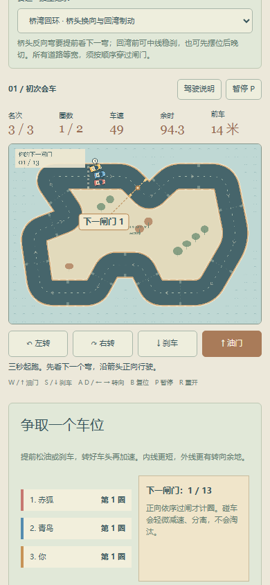
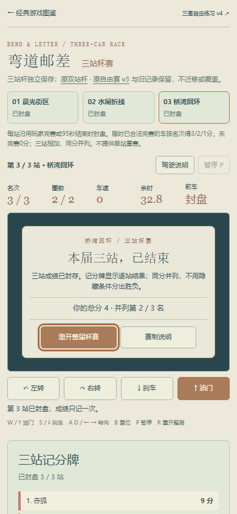
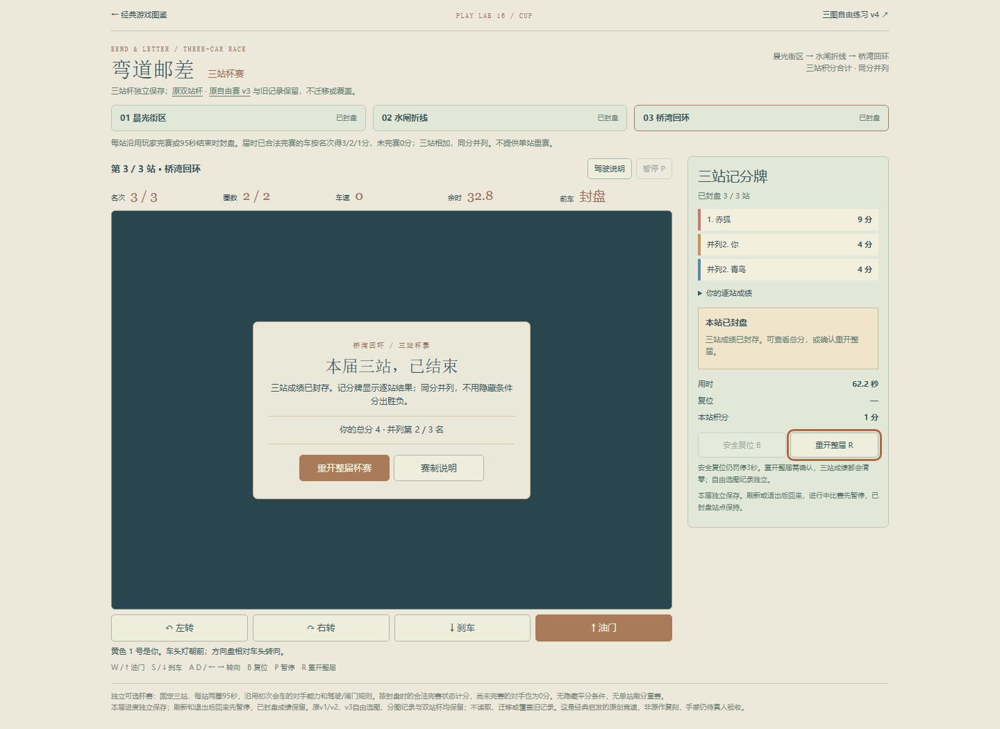

新增一条原创赛道及独立三站杯，目录仍45项。原自由赛、两条赛道、双站杯与存档均保留。等宽86、14闸门、两圈95秒；上方成组反向弯连接下方内凹回湾，不是镜像、单纯拉长或变宽捷径。原车辆物理、AI、碰车、闸门与复位规则不变；视觉复用本项目原创资源，非官方复刻。
8条模型合法两圈（两策略×50/100/200ms及抖动），三档原AI均合法28次过闸、无复位。旧两图各2400帧全状态对照；漏闸/逆行/复位等是明确模型位置夹具，未冒称普通UI实玩。道路间距只是采样诊断，非穷尽几何证明。
Windows/Chromium147，约50ms只读快照建议，原生WASD/按钮，无位置、时间、胜负或新进度注入。杯赛固定初次会车(stage0)，上表模型是最高场次(stage2)，不能跨条件比较耗时为手感/性能结论。第三站活动比赛真实刷新后保持三车、时钟、闸门和罚停，先暂停且旧输入清除。
| 站 | 辅助活动用时 | 名次 | 积分 |
|---|---|---|---|
| 1 | 37.69s | 3 | 1 |
| 2 | 57.50s | 2 | 2 |
| 3 | 62.17s | 3 | 1 |
实际总分4，和青鸟并列第2；赤狐9分第1。合法完赛与第一名明确区分，不称杯赛夺冠。每站封盘一次，站间/实际终态刷新不重复计分，真实完成档即时保留。取消重开保留，确认清空本届三站；总分同分并列，无隐藏破平。没有单站刷分重赛；未完赛0分仍可下一站，当前场重试放在独立自由练习。
第三图自由练习通过普通UI故意不输入，自然95秒超时，第3名、0闸；随后只重试当前自由场。390CSS原生touch模拟完成油门/转向双触点、部分松开、移出释放、取消及暂停，原生B复位罚停3秒、合法闸门进度保持；刷新精确续玩先暂停。杯赛实际首站结果及旧key字节未改。初次脚本错误地比较点击前仍在滑行的travel，已保留该尝试并从实际重试存档只补静止B/刷新尾段，未重跑95秒或更改规则。
v4自由练习只用classic-atlas.post.routes.v4，三站杯只用classic-atlas.post.cup.v2；旧自由赛/双站杯不读取、迁移或覆写。旧自由赛现场由普通UI新建暂停比赛，新版使用后重新打开仍精确；旧双站杯兼容用历史真实封盘结果重组的明确旧档夹具，不冒称本轮重新通关旧双站。读写故障、坏档、失败0分与平分的13组限定测试属单元/旅程夹具，没有真实设备故障宣称。
大厅新增v4邮差根页/cup路径的精确返回识别，原路径规则保留。截图为桌面浏览器与390CSS模拟，非真机触感/性能；模型和辅助竞速不证明真人驾驶、整体审美、长期乐趣或所有交通/策略平衡。仍为原创可玩候选，无新依赖、服务、凭据或费用。
三站普通UI结果 · 真实超时/重试/触控 · 模型/几何/边界 · 13组旅程/存储 · 模型脚本 · 旅程脚本 · 返回回归 · 赛制与保存


